Algorithmic Regularization (AR)
The algorithm used in this code is based on the literatures of Mikkola & Tanikawa (1999) and Preto & Tremaine (1999). The development of this code refers to the Chapter 2 (Mikkola) in book The Cambridge N-body Lectures. Here the basic idea of AR is described.
The numerical simulations of gravitational N-body systems dynamical evolutions are frequently used in astrophysics. However, due to the singularity of two-body gravitational potential when these two particles become infinite close lead to the difficulty in the highly accurately integration of two-body bounded system with very high eccentricity. To get high accuracy of integration when two particles are very close, the time step for integration should be reduced significantly. This result in time consuming computation if number of particles is large. On the other hand, for a long-term integration, the total energy of the systems may be systematiclly drifted due to the numerical accuracy of integrators. Thus the sympletic methods are suggested to be used since it can keep the energy conservation for long-term integration.
However, the sympletic methods are difficult to be applied for gravitational systems due to the required time step (integration step) shrinking when two particle get close. Thus Mikkola & Tanikawa (1999) and Preto & Tremaine (1999) develop the special time transformation method based on the extended phase space Hamiltonian. The time  become a general coordinate in Hamiltonian with corresponding general momentum
become a general coordinate in Hamiltonian with corresponding general momentum  . The integration of the equation of motion then depends on the new differential variable
. The integration of the equation of motion then depends on the new differential variable  . In this case, time and the motion of the system can be integrated with a fixed step size of s, which allow the usage of sympletic methods.
. In this case, time and the motion of the system can be integrated with a fixed step size of s, which allow the usage of sympletic methods.
Hamiltonian in Extended Phase Space
Defining the general coordinates as  with freedom of
with freedom of  and corresponding general momentums ad
and corresponding general momentums ad  , The Hamiltonian equations is:
, The Hamiltonian equations is:
(1)  ;
; 
Here the dt is used as a differetial varaible. For the propuse as we discussed above, we want to use a new variable  replacing the function of time . In this case, the time is treated as a new general coordinate. And the corresponding time momentum should be also added.
replacing the function of time . In this case, the time is treated as a new general coordinate. And the corresponding time momentum should be also added.
We extend the coordiantes to  and the momentums to
and the momentums to  with total freedom of
with total freedom of  .
.
The new Hamiltonian  should also satisfy the Hamiltonian equations (1). Especially for
should also satisfy the Hamiltonian equations (1). Especially for  , we can get:
, we can get:
(2)  ;
; 
From first equation of (2), we find the linearly depend on , thus can be the form as  . The second equation indicates that the time evolution of is equal to the negative energy change of the system. Thus the value of at the time can be
. The second equation indicates that the time evolution of is equal to the negative energy change of the system. Thus the value of at the time can be  .
.
We want to write Hamiltonian equations with new differetial variable  . Defining
. Defining  , we can rewrite (1) with
, we can rewrite (1) with  and extended coordinates
and extended coordinates  as:
as:
(3)  ;
; 
However, we need to have the Hamiltonian equations the same form as original, thus we need to find another Hamiltonian  that satisfy the Hamiltonian equations:
that satisfy the Hamiltonian equations:
(4)  ;
; 
To find correct , we go back to the Principle of least action which is used to derive the Lagrangian equations. The relation between (standard) Hamiltonian  and Lagrangian
and Lagrangian  is
is
(5) 
The Principle of least action require the action
(6) ![$ S = \int_{t_1}^{t_2} L(\mathbf{p},\mathbf{q},t) dt = \int_{t_1}^{t_2} \left[ \sum_{i=1}^n p_i \dot{q_i} - H(\mathbf{p},\mathbf{q},t) \right] dt $](form_77.png)
should take the mimimum path, thus any function variation  should makes
should makes  increase. Thus when
increase. Thus when  , this condition is satisfied. This leads to the Lagrangian equations and also the Hamitonian equations.
, this condition is satisfied. This leads to the Lagrangian equations and also the Hamitonian equations.
Here the integration takes from  to
to  and the time is used as integration variable. Now we treat as new coordinate and momemtum, as new Hamitonian, and use as new integration variable. Then
and the time is used as integration variable. Now we treat as new coordinate and momemtum, as new Hamitonian, and use as new integration variable. Then  can be rewrited as:
can be rewrited as:
(7) ![$ S = \int_{s_1}^{s_2} \left[ \sum_{i=1}^n p_i \frac{d q_i} {d s} + Pt \frac{d t}{d s} - (H(\mathbf{p},\mathbf{q},t) + Pt) \frac{d t}{d s} \right] ds = \int_{s_1}^{s_2} \left[ \sum_{i=1}^{n+1} P_i \frac{d Q_i}{d s} - H'(\mathbf{P},\mathbf{Q}) \frac{d t}{d s}\right] ds $](form_84.png)
It is obvious that when
(8) 
The formula (7) become the same form as (6). Then with Principle of least action, the Hamiltonian equation (4) can be derived. We call the  is the Hamiltonian in the extended phase space
is the Hamiltonian in the extended phase space 
The Hamiltonian in extended phase space  is also useful for analyzing the systems where Hamiltonian
is also useful for analyzing the systems where Hamiltonian  explicitly depends on time and is not conserved. Since time become a coordinate in ,
explicitly depends on time and is not conserved. Since time become a coordinate in ,  is zero thus
is zero thus  become conserved quantity. The method dealing with closed system can be used with Hamiltonian in extended phase space.
become conserved quantity. The method dealing with closed system can be used with Hamiltonian in extended phase space.
Time transformation for Separable Hamiltonian
With the Hamiltonian in extended phase space, we can integrate the equation of motions with step  by choosing a kind of
by choosing a kind of  . If we choose a that makes the Hamiltonian
. If we choose a that makes the Hamiltonian  separable for
separable for  and
and  :
:
(9) 
Then explicit Leapfrog (SIA) integration method can be used. Preto & Tremaine (1999) suggests to use
(10) 
where  is the extended kinetic energy and
is the extended kinetic energy and  is the extended potential energy.
is the extended potential energy.
The Hamiltonian becomes separable:
(11) 
Then the equation of motions are:
(12)  ;
;  ;
;  ;
;  ;
;
where  .
.
Since  ,
,  . Thus during integration,
. Thus during integration,  . This requires
. This requires  . With Taylor expansion, we can obtain:
. With Taylor expansion, we can obtain:
(13) ![$ f(T(\mathbf{P})) = f(-U(\mathbf{Q})) + \left[T(\mathbf{P}) + U(\mathbf{Q})\right] f'(-U(\mathbf{Q})) + O\left[T(\mathbf{P}) + U(\mathbf{Q})\right]^2 $](form_111.png)
Thus
(14) 
Logarithmic Hamintonian method (LogH)
Mikkola & Tanikawa (1999) suggests to use the function  (Logarithmic Hamintonian method). In this case, the time transformation based on (14) is:
(Logarithmic Hamintonian method). In this case, the time transformation based on (14) is:
(15) 
Then the equation of motions can be written as:
(16)  ;
;  ;
;  ;
;  ;
;
For the point mass systems with Newtonian gravity
(17)  ;
; 
where G is gravitational constant and  are masses of point-mass particles.
are masses of point-mass particles.
From (17) we see  . This is only for the isolated system. If the system has external force from perturbers or external potential. The energy of system (
. This is only for the isolated system. If the system has external force from perturbers or external potential. The energy of system (  ) may not be conserved any more. Thus the energy change should be added into during the integration.
) may not be conserved any more. Thus the energy change should be added into during the integration.
Time-Transformed Leapfrog (TTL)
The regularization methods where energy explicitly appear in the equation of motions cannot solve the few-body systems with large mass ratio (for example, planetary systems and super massive black hole with surrounding stars), because the energy is dominated by the massive bodies, and this introduce the systematic error during the integration. To solve this kind of issue, Mikkola & Aarseth (2002) developed the so-called Time-Transformed Leapfrog (TTL) method. This method is also based on time transformation. The major difference compared with the LogH method is that the time transformation function also need to be integrated.
The time transformation (10) leads to the equations of motion (12) where time transformation  and
and  explicitly depend on kinetic energy, binding energy and potential. If we want to replace
explicitly depend on kinetic energy, binding energy and potential. If we want to replace  to other quantity
to other quantity  (here is positive), considering the requirement , we should also find another quantity
(here is positive), considering the requirement , we should also find another quantity  that allow
that allow  . and
. and
(18) 
Instead of finding the for each kind of , Mikkola & Aarseth (2002) suggest to use the differential equation
(19) 
and integrate this equation to approximate  simultaneously with integration of
simultaneously with integration of  .
.
However
(20) 
Thus  explicitly depends on the momemtum. The integration in principle are not separatable. To solve this issue, Mikkole & Aarseth (2002) recommend to use averaged momemtums
explicitly depends on the momemtum. The integration in principle are not separatable. To solve this issue, Mikkole & Aarseth (2002) recommend to use averaged momemtums  (velocities) between previous and current step's during the Leapfrog integration, because the averaged values can represent the momemtums at the D (half) step when
(velocities) between previous and current step's during the Leapfrog integration, because the averaged values can represent the momemtums at the D (half) step when  is integrated.
is integrated.
Then if we take  again, we have the equations of motion like:
again, we have the equations of motion like:
(21)  ;
;  ;
;  ;
;  ;
;
This solution avoid use the energy (potential) as a time transformation dependence, thus with a suitable choice of  , the high mass ratio systems can be integrated with high accuracy.
, the high mass ratio systems can be integrated with high accuracy.
Implementation of ARC
We implememted AR method together with Chain (discussed below) for few-body systems by using C++ programming Language. The idea is make the integrator a C++ class thus can be easily used as a module for other codes. In this section we describe the details of the implementation.
Particle Chain
If the bounded few-body systems are inside a big cluster enviroment, the average distance between these particles can be much smaller than the scale of cluster. Thus the round off error can be large if the positions of these particles are in the cluster center-of-mass frame. To avoid this issue, Mikkola & Aarseth (1993) suggested to use Chain method.
The idea is to connect all particles in one chain and using relative position and velocity for integration. Firstly, one particle is selected as a starting point of the chain, then the nearest particle is selected as the next chain member, the relative position  and velocity
and velocity  between these neighbors are calculated and stored. After that, we found the nearest particle to this second member from the remaining particles and calculate relative positions and velocites and do this iterately until all particles are connected in this chain. The relative positions and velocites can be described by absolute positions and velocities in a ordered chain as:
between these neighbors are calculated and stored. After that, we found the nearest particle to this second member from the remaining particles and calculate relative positions and velocites and do this iterately until all particles are connected in this chain. The relative positions and velocites can be described by absolute positions and velocities in a ordered chain as:
(22)  ;
; 
The integration is done with these relative quantities to reduce round off error. The equations of motion can be written as
(23)  ;
; 
where  is the acceleration of particle
is the acceleration of particle  .
.
When the particles are moved, the nearest neighbor of each particle may become different, thus the update of chain order should be performed with a suitable time interval.
Leapfrog Integrator
By combining the AR algorithm and Chain scheme, we can construct a Leapfrog integrator of equations of motion for $N$-body systems like:
- D mode:
(24)  ;
;  ;
; 
- K mode:
(25)  ;
;  ;
;  ;
; 
where  is the external force from outside the system (e.g., perturber force or tidal force) of each particle , and
is the external force from outside the system (e.g., perturber force or tidal force) of each particle , and  is obtained by averaging the velocities of the initial and the final
is obtained by averaging the velocities of the initial and the final  of this K mode step.
of this K mode step.  are the coefficients representing the weights of the LogH, TTL and non-time-transformation modes separately. For example, if
are the coefficients representing the weights of the LogH, TTL and non-time-transformation modes separately. For example, if  , then no LogH will be performed, and if
, then no LogH will be performed, and if  it is LogH ARC.
it is LogH ARC.
The initial value of  should be the initial binding energy of the system
should be the initial binding energy of the system  . If the system is isolated, is constant. The initial value of
. If the system is isolated, is constant. The initial value of  is set to initial .
is set to initial .
The Leapfrog step start with half-step D and then loop full-step K-D-K and stop with half-step D:
(26) 
This provide a second order integrator of ARC. Trying this integrator for a two-body bounded system can result in an energy and eccentricity conserved kepler orbit. Only the time phase can have cumulative error after long-term integration.
Extrapolation Integrator
The Leapfrog integrator only has second order accuracy, which is not enough for many applications. One can reduce the step size of integration to obtain higher accuracy. However, as energy is always conserved for two-body motions, we don't have good checker to indicate whether the integration is accurate enough. A better and more efficient way is to extrapolate the integration results to infinite small step  , thus the high accuracy result can be obtained. The idea of extrapolation integration is well summarized in Stoer & Bulirsch. Here the basic algorithm is shown.
, thus the high accuracy result can be obtained. The idea of extrapolation integration is well summarized in Stoer & Bulirsch. Here the basic algorithm is shown.
First, if we integrate the equations of motion with Leapfrog integrator by step  . we get the first result with a certain accuracy. Now we keep the total step constant but divide the integration into several sub-steps with equal sizes by
. we get the first result with a certain accuracy. Now we keep the total step constant but divide the integration into several sub-steps with equal sizes by  , we can obtain higher accuracy of the integration. When we use a sequence of dividers
, we can obtain higher accuracy of the integration. When we use a sequence of dividers  (
(  ) and do the integration with each of them, we can obtain a series of results with increasing accuracy. Then we can extrapolate these results to obtain the value of
) and do the integration with each of them, we can obtain a series of results with increasing accuracy. Then we can extrapolate these results to obtain the value of  .
.
There are two major methods of extrapolation: polynomial and rational. Both methods can be described as recursive functions:
- Polynomial:
(27)  ,
, 
- Rational:
(28) ![$ T_{i,k} = T_{i,k-1} + \frac{T_{i,k-1} - T_{i-1,k-1}}{\left[ \frac{h_{i-k}}{h_i} \right]^2 \left[ 1 - \frac{T_{i,k-1} - T_{i-1,k-1}}{T_{i,k-1}- T_{i-1,k-2}} \right]-1} $](form_177.png) ,
,
Here indicate the integration with sub-step size  , and
, and  indicate the extrapolation order. The
indicate the extrapolation order. The  are results of Leapfrog integrations, and for each order , the 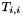 is final extrapolation result we want. The can be obtained by calculating
are results of Leapfrog integrations, and for each order , the 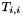 is final extrapolation result we want. The can be obtained by calculating  from
from  to using the recursive functions.
to using the recursive functions.
One benefit of these recursive functions is that a higher order extrapolation  can be established based on current existing 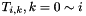 with a new higher order integration result 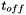. Then it is easy to estimate the error by comparing and to determine whether another higher order result is necessary. For example, in ARC integration, we can check the time or position phase error and energy error to determine how many orders we need to integrate and extrapolate due to the accuracy requirment.
can be established based on current existing 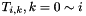 with a new higher order integration result 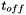. Then it is easy to estimate the error by comparing and to determine whether another higher order result is necessary. For example, in ARC integration, we can check the time or position phase error and energy error to determine how many orders we need to integrate and extrapolate due to the accuracy requirment.
The sequences of dividers  have several choices for different applications:
have several choices for different applications:
- Romberg: (1, 2, 4, 8 ...)
- Bulirsch & Stoer (BS): (1, 2, 3, 4, 6, 8 ...)
- Hairer (4k): (2, 6, 10, 14 ...)
- Harmonic: (1, 2, 3, 4 ...)
Different seuqnces and recursive functions can be combined together for extrapolation integration. We implement all sequences shown above. Later we discuss the special application of some sequences.
Dense Output for Time Synchronization
Although the ARC can make the integration of $N$-body systems accurately, the side-effect of time transformation is that the physical time become unpredictable. With the Leapfrog integrator, we cannot know what will be the final physical time before one integration step finish. This result in difficulty if we want to use the ARC together with a $N$-body code to simulate a particle cluster including dense sub-systems. The integration of the motions of particles surrounding this sub-system need to obtain the acceleration from this sub-system at a certain physical time, but with ARC the integration of this sub-system cannot exactly reach the required time. Especially with extrapolation method, the large integration step is used frequently, thus the physical time error can be significant.
To solve this issue, we apply the dense output of extrapolation method introduced by Hairer & Ostermann (1990). The idea of this scheme is using interpolation to obtain the integrated variable at any sub-step inside an extrapolation integration step. The interpolation should have the similar order of accuracy as the extrapolation and the internal integration results during extrapolation should be used for interpolation to save computational effort.
The physical time  as a function of integration step variable 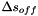 then can be interpolated as
as a function of integration step variable 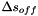 then can be interpolated as  . If the required ending physical time 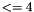 is inside one integration step, we can solve the equation 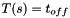 to obtain the correct step size
. If the required ending physical time 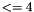 is inside one integration step, we can solve the equation 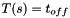 to obtain the correct step size  to reach the exact . Then by redoing this integration step with
to reach the exact . Then by redoing this integration step with  , we can get correct results.
, we can get correct results.
One can also try to do dense ouput for all variables ( , ,  , ,
, ,  ), thus the results at correct physical time can be directly calculated instead of redoing the integration. However, as the computation of dense output is quite heavy (many extrapolation is needed; see below), redoing the integration can be cheaper if particle number is not large ( 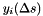).
), thus the results at correct physical time can be directly calculated instead of redoing the integration. However, as the computation of dense output is quite heavy (many extrapolation is needed; see below), redoing the integration can be cheaper if particle number is not large ( 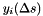).
Hairer & Ostermann (1990) introduced two dense output methods. One is for explicit Euler integrator using Harmonic sequences and another is for Gragg-Bulirsch-Stoer (GBS) method with 4k sequences (shown above). Here the brief algorithms are shown without mathematical proof.
Dense Output for explicit Euler
If the integrated variable is 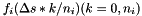 and its first derivate (acceleration) is  which can be calculated directly, we can use explicit Euler together with Harmonic sequence 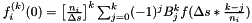 for extrapolation. Then during each integration step, we have the initial 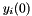 and the final
which can be calculated directly, we can use explicit Euler together with Harmonic sequence 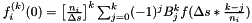 for extrapolation. Then during each integration step, we have the initial 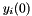 and the final  . In addition,
. In addition,  are also calculated. Thus we can obtain the high order derivates of
are also calculated. Thus we can obtain the high order derivates of  at the left and right edges using forward and backward differences:
at the left and right edges using forward and backward differences:
(29) ; ![$ f_i^{(k)}(\Delta s) = \left[\frac{n_i}{\Delta s}\right]^k \sum_{j=0}^k (-1)^j B_j^k f(\Delta s*(1-\frac{j}{n_i})) $](form_205.png) ; 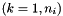
; 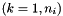
where 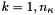 is the binomial sequence.
Then if the last sequence index used in extrapolation is 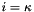, the maximum order of derivate is  . Besides, for each order of derivate 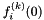 and 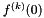 (
. Besides, for each order of derivate 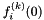 and 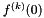 (  ), we also have the values of different order of accuracy corresponding to difference step size 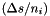 ( 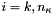). Thus the extrapolation can be done with these different order of accuracy (the same way as the extrapolation of 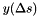) to get high accurate derivates 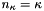 and 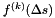.
), we also have the values of different order of accuracy corresponding to difference step size 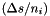 ( 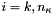). Thus the extrapolation can be done with these different order of accuracy (the same way as the extrapolation of 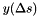) to get high accurate derivates 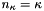 and 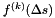.
Since now the  , , and are avaiable, then Hermite interpolation can be used to get the interpolation polynomial function
, , and are avaiable, then Hermite interpolation can be used to get the interpolation polynomial function  and
and
(30) 
where 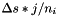 in the case of Harmonic sequence.
Dense Output for Gragg-Bulirsch-Stoer
Similar as the dense output method described above, for mordified middle point integrator used in GBS method, we can construct the interpolation using high order derivates of at the middle position ( 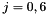) instead of edges. However, differing from the edge differences, the middle difference is sensitive to the data point number. If 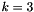 is even, to obtain the derivate order with odd (which means  points are needed), we have to use values every two sub-steps.
points are needed), we have to use values every two sub-steps.
For example, when , there are 6 sub-steps and 7 points (  with
with  ). If 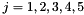, 4 points are needed to obtain the derivate
). If 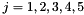, 4 points are needed to obtain the derivate  . Since we need the derivate at 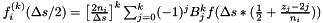, only at 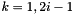 can be used. If
. Since we need the derivate at 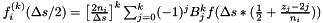, only at 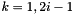 can be used. If  , values at
, values at  are OK. But the difference step sizes in this case are different for odd and even
are OK. But the difference step sizes in this case are different for odd and even  .
.
To keep accuracy order consistent, we only allow every two points to be used for both odd and even order of derivates. The formular then should be
(31) ![$ f_i^{(k)}(\Delta s/2) = \left[ \frac{2n_i}{\Delta s} \right]^k \sum_{j=0}^k (-1)^j B_j^k f(\Delta s*(\frac{1}{2}+\frac{z_j-2j}{n_i})) $](form_235.png) ;
;
- if is odd, 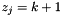
- if is even, 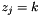
together with the 4k sequence 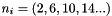.
Then again the extrapolation of the derivates and also the middle point integrated variable  can be done and
can be done and  ,
,  , and derivates 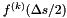 ( 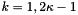) are avaiable for Hermite interpolation. This method can provide the interpolation polynomial function with accuracy
, and derivates 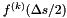 ( 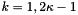) are avaiable for Hermite interpolation. This method can provide the interpolation polynomial function with accuracy
(32) 
Integration Step Control
If we use the automatical accuracy order in extrapolation integration (the maximum sequence index 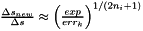 is determined by the error criterion), the step size 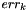 can be constant with a suitable initial value. On the other hand, can be also adjusted based on integration error to approach better performance.
The integration error at sequence index can be estimated as
(33) 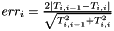
If we want the expected error appear at sequence index after the next integration step, the step modification factor can be estimated as:
(34) 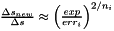
with the assumption 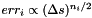. To determine which is best for performance, the computational effort
(35) 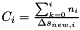
is calculated for each  , then we choose index 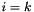 which corresponds to the mimimum
, then we choose index 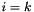 which corresponds to the mimimum  . The next step is 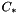. This method should work with fixed accuracy order (
. The next step is 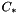. This method should work with fixed accuracy order (  is constant).
is constant).
Performance Analysis
Here the performance analysis of the code is provided. For one step of Leapfrog integration, we need two half-step integration of  and 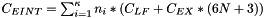, one full-step integration of , and
and 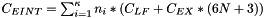, one full-step integration of , and  . Before is integrated, the acceleration
. Before is integrated, the acceleration  is calculated. If the particle number is
is calculated. If the particle number is  , the computational cost is:
, the computational cost is:
(35) 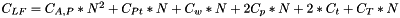
where  correspond to the number of operations of different parts. If there is no perturbation and external force, is constant and 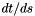. If TTL method is switched off, 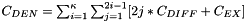.
correspond to the number of operations of different parts. If there is no perturbation and external force, is constant and 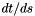. If TTL method is switched off, 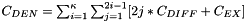.
During the extrapolation integration, the Leapfrog integration is performed many times. After integration finished at each sequence , the extrapolation is performed. Thus the total cost is:
(36)
where  is the number of operations of (polynomial or rational) extrapolation function. The 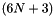 includes the variables of , , , and .
is the number of operations of (polynomial or rational) extrapolation function. The 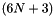 includes the variables of , , , and .
For the dense output, the high order derivates of 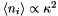 and their extrapolation are calculated. The cost is:
(37) ![$ C_{DEN} = \sum_{i=1}^\kappa \sum_{j=1}^{2i-1} [2j*C_{DIFF} + C_{EX}] $](form_271.png)
where 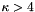 is the number of operations for adding one  value during the computation of difference (31). For the two dense output methods discussed Section Dense Output for Time Synchronization, the cost formula is similar (but the can be significant difference in practice).
value during the computation of difference (31). For the two dense output methods discussed Section Dense Output for Time Synchronization, the cost formula is similar (but the can be significant difference in practice).
As we discussed in Section Dense Output for Time Synchronization, we can do interpolation for all variables and the cost of dense output is . Then the cost of dense output over extrapolation integration is
(38) 
where  is the average from
is the average from  . In the case of 4k sequence, 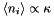. The value of
. In the case of 4k sequence, 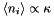. The value of  depends on the computational error criterion and the integration step size . Usually
depends on the computational error criterion and the integration step size . Usually  , thus if is not large (
, thus if is not large (  ), the full dense output with all variables is can be more computational expensive.
), the full dense output with all variables is can be more computational expensive.